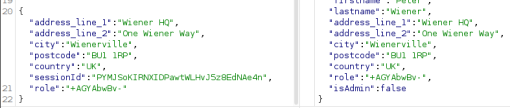

Detecting server-side prototype pollution without polluted property reflection
- Provided with storefront website, told to use prototype pollution to change server behavior, provided credentials “wiener:peter”
- Logged in using provided credentials
- Intercepted billing and delivery address update request using burpsuite
- Noticed visible JSON in request
- Appended arbitrary property with string encoded in UTF-7
- Resulting HTTP response contained string still in UTF-7:

- Replaced arbitrary property addition with “__proto__”:{ “content-type":"application/json; charset=utf-7"} and sent
- Changed back to addition of role: “+AGYAbwBv-” and sent
- Returned HTTP response contained decoded version of text and successfully solved lab: